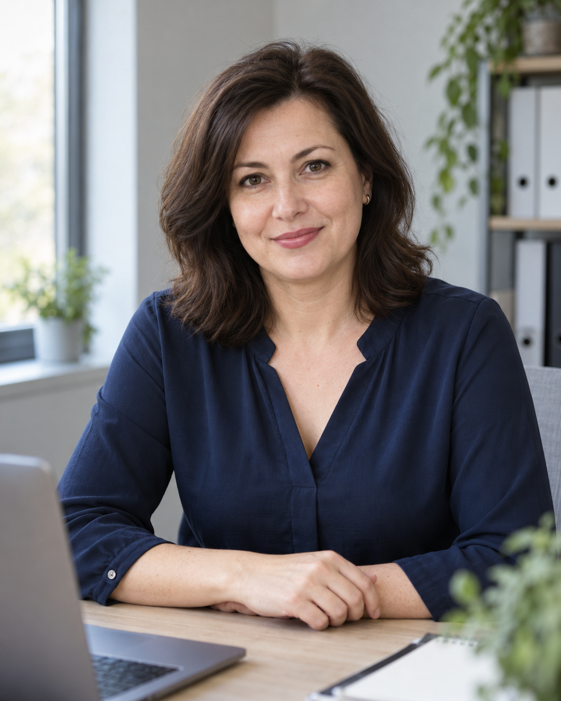

Оплаты не сходятся
Сверка осталась на вечер. Когда до неё дошли руки, пришлось искать, почему сумма в таблице отличается от выписки.
Что может помочьТаблица, которая выделяет расхождения
Ольга Смирнова · бухгалтер для ИП и самозанятых
Я бухгалтер с 12-летним опытом. Помогаю разобраться в налогах и документах, а нейросети использую для сверки таблиц, подготовки ответов и работы с информацией о сроках.
Могу помочь вам подобрать инструменты под вашу работу и показать, как пользоваться ими самостоятельно или вместе с командой.
Ссылка для записи будет добавлена позже.

Знакомые рабочие ситуации
Сверка осталась на вечер. Когда до неё дошли руки, пришлось искать, почему сумма в таблице отличается от выписки.
Вопрос уже обсуждали, но ответ остался где-то в переписке. Вы ищете сообщение и объясняете всё ещё раз.
Начать можно с того, что чаще всего приходится переделывать, искать или объяснять заново.
Мой подход
Какие оплаты пришли, чего не хватает в документах, какой срок приближается и что сейчас нужно сделать.
Я объясняю это простыми словами, без необходимости сначала изучить бухгалтерский словарь. Такой же подход использую в своём Телеграм-канале «Бухгалтерия без паники».
Нейросети помогают мне готовить материалы и работать с данными, но результат я проверяю. Особенно там, где речь идёт о расчётах, налогах и конкретной ситуации клиента.
Примеры работ
Во время обучения работе с нейросетями я создавала инструменты под свои бухгалтерские задачи. Ниже несколько примеров, которые могут пригодиться и в вашей работе. Макеты воссозданы для этой страницы, чтобы показать, как могут выглядеть инструменты.
01 · Таблица сверки
Сопоставить банковскую выписку с учётом и найти расхождения.
Собрала таблицу с формулами на обезличенных данных. Проверила расчёты на известных суммах.
В учебном примере нашлись дубль, пропущенная оплата и опечатка в сумме.
Можно проверять выделенные записи, вместо того чтобы просматривать всё построчно.
02 · ИИ-помощник
Готовить ответы на частые вопросы по согласованным правилам.
Настроила помощника: добавила инструкции, памятку по срокам и частые вопросы.
Помощник готовит черновик в моём тоне. Я проверяю его перед отправкой.
Так же можно подготовить помощника для команды, например для писем с запросом документов.
03 · Регулярная сводка
Просматривать предстоящие обязательства в одном месте.
Настроила ежемесячную задачу для подготовки сводки по типам клиентов.
Получаю обзор, в котором проверяю актуальность сроков и их применимость к ситуации клиента.
Похожую сводку можно настроить под ваши повторяющиеся задачи.
04 · Шаблон документа
Подготовить основу для повторяющихся деловых текстов.
По своим материалам собрала шаблон предложения и инструкции для ответов клиентам.
Есть основа, которую можно дополнять деталями конкретного запроса. Факты проверяю по официальным источникам.
Этот подход пригодится для писем, памяток и внутренних инструкций.
Для вас и сотрудников
Если вы уже пробовали нейросеть, но получали слишком общие ответы или тратили много времени на исправления, можно разобрать это на вашей задаче.
Посмотрим, какую информацию дать помощнику, как сформулировать запрос и что проверить в результате. Например, как сопоставить две таблицы, подготовить письмо клиенту или собрать инструкцию для сотрудника.
Мне важно, чтобы после разбора вы могли повторить эти действия в своей работе и понимали, когда справитесь самостоятельно, а когда стоит обратиться к бухгалтеру.
С чего начнём
Можно прийти с конкретным вопросом или рассказать, что сейчас отнимает больше всего времени: оплаты, таблицы, документы, сроки или повторяющаяся переписка.
Ссылка для записи будет добавлена позже.
Разберём, где возникает путаница и с чего разумнее начать. Возможно, вам пригодится ИИ-помощник, а возможно, задачу решит одна удобная таблица.